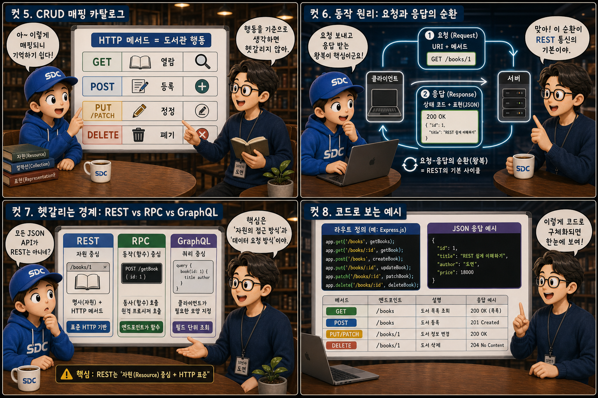
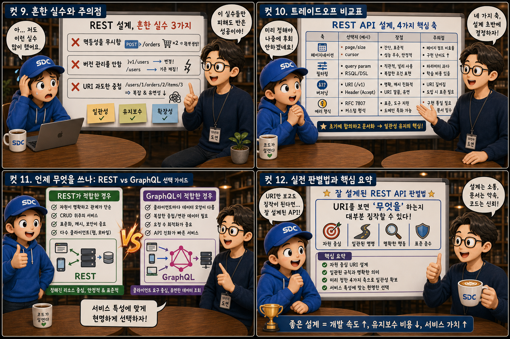

거대한 도서관의 ‘서가’와 ‘사서’에 비유해, 자원을 이름 짓고 다루는 약속을 12컷으로 풀어봅니다.
URI = 명사+Method = 동사
웹 서버는 거대한 도서관과 같습니다. 끝없이 뻗은 서가에는 사용자, 게시글, 주문 내역 같은 자원(resource)이 책처럼 꽂혀 있고, 방문자는 카운터의 사서에게 쪽지를 내밀며 묻습니다. “이 자원을 어떻게 부르고, 무엇을 해달라고 요청해야 하나요?” 이 질문에 대한 약속의 이름이 바로 REST입니다. 이 글에서는 자원을 가리키는 이름인 URI와 그 자원에 가하는 행동(HTTP 메서드)이 어떻게 역할을 나누는지, 도서관 사서의 하루에 비유해 하나씩 살펴봅니다.
PART 1 / 3 — 약속의 발견 (컷 01–04)
fourcut-01 — 컷 01 ~ 04
컷 01
거대한 서가 앞에서
웹 서버는 거대한 도서관과 같다. REST는 “이 책을 어떻게 부르고, 무엇을 해달라고 할 것인가”에 대한 약속의 이름이다.
소실점 너머로 끝없이 뻗은 서가, 책등마다 새겨진 짧은 URI 라벨, 카운터에 차분히 선 사서. 그리고 물음표가 적힌 쪽지를 든 방문자. 웹 서버가 다루는 모든 것 — 사용자, 게시글, 주문 내역 — 은 결국 자원(resource)입니다. REST API 설계란 이 자원들을 어떤 이름(URI)으로 부르고, 어떤 동작(HTTP 메서드)으로 다룰지에 대한 약속을 정하는 일입니다. 사서의 손끝에서 뻗어 나간 광선이 서가의 한 책을 정확히 가리키듯, 좋은 약속은 요청을 정확한 자원으로 데려다줍니다.
컷 02
정의부터 명확히: REST란 무엇인가
REST는 자원을 URI로 표현하고, 그 자원에 대한 행동을 HTTP 메서드로 표현하는 설계 스타일이다.
REST(Representational State Transfer)는 자원(resource)을 URI라는 고유한 이름으로 식별하고, 그 자원에 대해 무엇을 할지는 HTTP 메서드(GET, POST, PUT, DELETE 등)로 표현하는 설계 원칙입니다. 펼쳐진 책의 왼쪽 페이지가 서가 위치를 가리키는 태그 — “URI = 위치(명사)” — 라면, 오른쪽 페이지는 사서의 손동작 — “메서드 = 행동(동사)” — 입니다. 즉 URI는 “무엇을”에 해당하는 명사이고, 메서드는 “어떻게 할지”에 해당하는 동사 역할을 맡습니다. 이 역할 분담이 REST의 핵심입니다. Representational State Transfer
컷 03
나란히 비교: 좋은 URI vs 나쁜 URI
좋은 URI는 자원의 위치만 가리키고, 나쁜 URI는 행동까지 이름에 욱여넣는다.
정돈된 서가와 어질러진 서가를 나란히 놓고 보면 차이가 선명해집니다. /users/123/orders는 “123번 사용자의 주문들”이라는 자원의 위치만 나타내는 명사형 URI로, 책이 자원별로 깔끔히 분류되어 꽂혀 있는 좋은 설계입니다. 반면 /getUserOrderById?id=123은 URI 안에 “가져오다(get)”라는 행동까지 집어넣어 메서드와 역할이 중복됩니다 — 책등마다 동사 스티커가 덕지덕지 붙은 서가와 같습니다. 좋은 REST 설계는 URI에서 동사를 걷어내고, 그 역할을 HTTP 메서드에 온전히 맡깁니다.
컷 04
핵심 원칙 인용카드
URI는 명사(자원)여야 하고, 동사(행동)는 HTTP 메서드가 담당한다는 것이 REST 설계의 제1원칙이다.
RESOURCE — URI
명사로 자원의 이름과 계층을 담는다
ACTION — METHOD
동사는 HTTP 메서드가 온전히 담당한다
the first principle of REST design
“URI는 명사여야 하고, 동사는 HTTP 메서드가 담당한다.” REST 설계에서 가장 자주 인용되는 원칙입니다. URI에는 /users, /orders/123처럼 자원의 이름과 계층만 담고, 생성이나 조회, 삭제 같은 행동은 GET, POST, PUT, DELETE 같은 메서드로 표현합니다. 이 원칙을 지키면 URI만 보고도 어떤 자원을 다루는지 예측할 수 있습니다.
PART 2 / 3 — 메서드와 동작 원리 (컷 05–08)

fourcut-02 — 컷 05 ~ 08
컷 05
CRUD 매핑 카탈로그: 열람 · 등록 · 정정 · 폐기
GET, POST, PUT/PATCH, DELETE는 각각 도서관의 열람, 등록, 정정, 폐기라는 행동에 대응한다.
CRUD × HTTP method mapping
메서드
도서관의 행동
예시 URI
GET
열람(조회) — 돋보기로 책을 살펴본다
GET /books/42
POST
등록(생성) — 새 책을 서가에 꽂는다
POST /books
PUT
전체 정정(치환) — 표지째 다시 발행한다
PUT /books/42
PATCH
부분 정정 — 한 페이지만 수정펜으로 고친다
PATCH /books/42
DELETE
폐기(삭제) — 책을 파쇄함에 넣는다
DELETE /books/42
REST에서 자원을 다루는 행동은 대개 CRUD(Create, Read, Update, Delete)로 정리됩니다. GET은 조회, POST는 새 자원 생성, PUT은 자원 전체를 치환하는 수정, PATCH는 자원의 일부만 바꾸는 수정, DELETE는 삭제를 의미합니다. 도서관 대출 창구에 늘어선 다섯 개의 타일처럼, 각각 열람, 신규 등록, 표지 전체 재발행, 페이지 일부 정정, 폐기에 해당합니다.
컷 06
동작 원리: 요청과 응답의 순환
클라이언트가 자원 URI와 메서드로 요청을 보내면, 서버는 상태 코드와 표현(JSON)으로 응답한다. 이 왕복이 REST 통신의 기본 순환이다.
REST 통신의 기본 단위는 요청과 응답의 한 번의 왕복입니다. 방문자가 GET /books/42라고 적힌 쪽지를 내밀면, 사서는 해당 책을 스캔해 확인하고 “200 OK” 태그와 함께 책의 표현(representation) — 주로 JSON — 을 돌려줍니다. 여기서 중요한 특징이 하나 더 있습니다. 각 요청은 이전 요청의 맥락을 서버가 기억하지 않는 무상태(stateless) 방식으로 처리됩니다. 사서는 매번 쪽지에 적힌 내용만 보고 일하며, 이 순환은 요청마다 처음부터 반복됩니다.
컷 07
헷갈리는 경계: REST vs RPC vs GraphQL
모든 JSON API가 REST는 아니다. RPC는 동사 중심 호출이고, GraphQL은 클라이언트가 필요한 데이터 모양을 직접 지정하는 질의 방식이다.
도서관에 세 개의 코너가 있다고 상상해 보세요. REST 코너에는 명사형 URI 라벨이 붙은 책들이 정돈되어 꽂혀 있습니다. RPC(Remote Procedure Call) 코너의 방문자는 사서에게 doSomething()이라고 적힌 쪽지를 건넵니다 — /doSomething 같은 동사형 엔드포인트로 특정 함수를 원격 실행하는 데 초점을 두는 방식입니다. GraphQL 코너의 방문자는 원하는 항목만 체크한 체크리스트를 제출해 정확히 그 모양의 데이터를 받습니다. JSON을 주고받는다고 해서 모두 REST인 것은 아닙니다. REST는 자원과 표준 메서드라는 제약을 지키는 스타일이고, RPC와 GraphQL은 이와 다른 철학을 가진 별개의 설계 방식입니다.
컷 08
코드로 보는 예시: 사서의 업무 수첩
실제 REST 엔드포인트는 라우트 정의와 JSON 응답 형태로 구체화된다.
라우트 정의 — 서가 위치와 행동의 짝
// id는 서가 위치, body는 새 책 정보
app.get('/books/:id', getBook); // 열람
app.post('/books', createBook); // 등록
app.delete('/books/:id', dropBook); // 폐기
JSON 응답 — 201 Created
// POST /books 성공 응답HTTP/1.1201 Created
{
"id": 43,
"title": "REST in Practice",
"shelf": "/books/43"
}
실제로 REST API를 구현할 때는 GET /books/:id, POST /books, DELETE /books/:id처럼 자원 경로와 메서드를 짝지어 라우트를 정의합니다. 새 책을 등록하는 POST 요청이 성공하면 서버는 201 Created 상태 코드와 함께 생성된 자원의 JSON 표현을 응답 본문에 담아 돌려줍니다. 이렇게 라우트 정의와 응답 형식이 합쳐져 하나의 완결된 REST 엔드포인트가 됩니다.
PART 3 / 3 — 실전 감각과 요약 (컷 09–12)

fourcut-03 — 컷 09 ~ 12
컷 09
흔한 실수와 주의점: 서가 사이의 경고 팻말
멱등성을 무시하거나, 버전 관리를 하지 않거나, URI를 과도하게 중첩하는 것은 REST 설계에서 자주 나오는 실수다.
⚠ 멱등성 무시 · 버저닝 부재 · 과도한 URI 중첩
DELETE나 PUT처럼 여러 번 반복 호출해도 결과가 같아야 하는 멱등성(idempotency)을 무시하면, 같은 요청이 두 번 들어갔을 때 예기치 못한 상태 변화가 생깁니다. 버전 관리 없이 새 규정집을 옛 규정집 위에 그냥 덮어쓰면 기존 클라이언트가 깨지고, /users/1/posts/2/comments/3/likes처럼 URI를 끝없이 깊게 중첩하면 가독성과 유지보수성이 무너집니다.
✓ 설계 초기에 반드시 점검할 것
멱등해야 할 메서드가 정말 멱등한지, API 버전 전략이 있는지, URI 계층이 두세 단계 안에서 끝나는지 — 이 세 가지는 서비스가 커지기 전, 설계 단계에서 미리 점검해야 할 항목입니다.
같은 폐기 버튼을 여러 번 눌렀는데 책이 반복해서 사라지고, 규정집이 뒤섞이고, 서가 위치 라벨이 /a/b/c/d/e/f처럼 끝없이 길어진 도서관 — 이마를 짚은 사서의 난감한 표정이 이 세 가지 실수의 결과를 말해줍니다.
컷 10
트레이드오프 비교표: 미리 정해둘 네 가지
페이지네이션, 필터링, 버저닝, 에러 형식은 REST API 설계에서 반드시 미리 정해두어야 할 네 가지 축이다.
decide these four before the API grows
설계 축
도서관 비유
대표적 접근 방식
페이지네이션
책을 여러 상자에 나눠 담는다
GET /books?page=2&size=20
필터링
특정 장르 책만 체로 골라낸다
GET /books?genre=sf
버저닝
v1, v2 라벨이 붙은 규정집을 따로 둔다
/v1/books — URI에 버전 포함
에러 형식
통일된 모양의 오류 안내 카드
{ "code", "message" } 일관 규격
실전 REST API 설계에서는 목록이 많을 때 나눠 보여줄 페이지네이션 방식, 조건에 맞는 자원만 추릴 필터링 파라미터, API가 바뀔 때 기존 클라이언트를 보호할 버저닝 전략, 그리고 실패 시 일관된 형식으로 알려줄 에러 응답 규격을 미리 정해야 합니다. 이 네 축을 초기에 합의해두지 않으면 API가 커질수록 일관성이 무너지고 클라이언트 구현이 어려워집니다.
컷 11
언제 무엇을 쓰나: REST vs GraphQL 선택 가이드
자원이 명확하고 단순한 CRUD 위주라면 REST가 알맞고, 클라이언트마다 필요한 데이터 모양이 크게 다르고 복잡하다면 GraphQL 같은 대안이 더 알맞을 수 있다.
🧭 REST를 고르는 경우 — 단순한 자원, 표준 CRUD
자원의 종류가 명확하다
표준적인 조회 · 생성 · 수정 · 삭제 위주다
HTTP 캐싱 등 인프라 이점을 그대로 누리고 싶다
🧭 GraphQL을 고려하는 경우 — 복잡하고 다양한 데이터 요구
화면마다 필요한 데이터 모양이 크게 다르다
여러 자원을 한 번에 조합해야 한다
클라이언트가 필요한 필드를 직접 지정하고 싶다
갈림길에 세워진 두 개의 팻말을 떠올려 보세요. 왼쪽 길의 방문자는 정돈된 서가에서 곧장 원하는 책을 찾아가고, 오른쪽 길의 방문자는 여러 서가를 넘나들며 항목별로 골라 담습니다. 자원이 명확하고 CRUD 위주라면 REST가 구현도 간단하고 캐싱 등 HTTP 인프라의 이점도 그대로 누릴 수 있어 적합합니다. 복잡한 클라이언트 요구가 많다면 GraphQL이 더 효율적일 수 있습니다. 다만 두 접근 모두 결국 “서버의 자원을 클라이언트에 전달한다”는 같은 목적을 향합니다. 정답은 하나가 아니라 서비스의 특성에 달려 있습니다.
컷 12
실전 판별법과 핵심 요약: 돋보기 속 URI
URI만 보고도 그 API가 무엇을 하는지 짐작할 수 있다면 잘 설계된 REST API다.
잘 설계된 REST API인지 판별하는 가장 실용적인 방법은 하나입니다. 돋보기 안에 비친 /users/123/orders/456처럼, URI만 보고도 그것이 어떤 자원을 다루는 요청인지 짐작할 수 있는가 — 짐작 가능하다면 좋은 설계입니다. URI는 명사로 자원을 가리키고, 메서드는 동사로 행동을 표현하며, 서버는 상태 코드와 표현으로 응답하고, 각 요청은 무상태로 처리됩니다. 여기에 버저닝과 페이지네이션 같은 실전 규칙을 더하되, REST가 모든 상황의 정답은 아니라는 점도 함께 기억하세요.